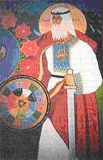
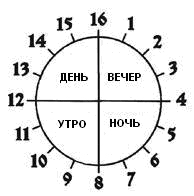
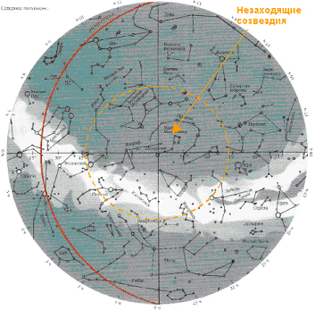
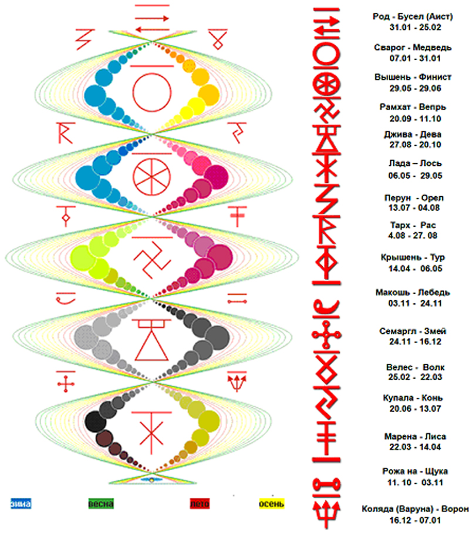
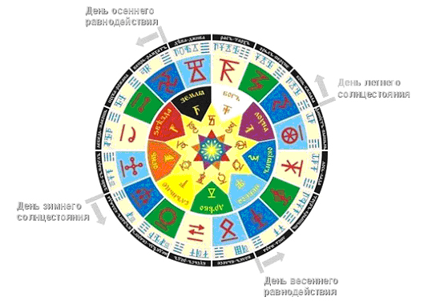

Даарийский Круголет Числобога „Коляды Дар“
и ведическая Aстрология.

Наше летоисчисление не связано ни с Солнцем, ни с Землями, ни
с Лунами, ни со Звёздами, а связано с Законами Рода Единого.
Ибо Солнца, Звёзды, Земли и Луны убыстряют и замедляют свой
ход, а Законы Рода Единого НЕЗЫБЛЕМЫ, и за соблюдением их
наблюдает Числобог, который является хранителем Рек Времени.
Нам говорят, что слово календарь произошло от латинского "calendarium", что в переводе с латинского означает буквально следующее: "запись ссуд", "долговая книга". Дело в том, что в Древнем Риме должники выплачивали долги или проценты в первые дни месяца, т.е. в дни календ (от лат. "calendae" или "kalendae", ещё "календы" - название первого дня месяца у древних римлян). А вот у греков календ не было. Поэтому о закоренелых неплательщиках римляне иронично говорили, что они вернут долг в греческие календы, то есть неизвестно когда. Это выражение стало крылатым во многих языках мира.
Название Славяно-Арийского Календаря "Каляды Даръ", что буквально означает подарок Коляды. Т.е. слово "календарь" происходит не от "долговой книги" римлян, а от сращения Каляды Даръ. Другое название Календаря — Круголет Числобога.
Ныне древним Даарийским Круголетом Числобога пользуются только ПравоСлавные Славяне (не путать с христианами) Староверы-Инглинги и Ирландский Орден Друидов. Даарийский Круголет Числобога уходит своими корнями во времена, когда наши Предки жили на северном материке, который они называли Даария (Гиперборея, Арктида, Арктогея). Календарь имеет Руническую форму отображения, т.е. названия Сороковников (месяцев), чисел, дней недели и названия Лет записывались Рунами (тайными Образами для передачи большого объёма информации). Первый Сороковник обозначался одной Руной, а остальные обозначались соединением двух Рун, причем вторая Руна, указывала на часть цикла вращения нашей Земли вокруг нашего Ярилы. Этот цикл называется Лето и обозначает "структурный" отрезок времени в Даарийском Круголeтe Числобога (с 1-го по 144-ый год).
Календарь основан на древнейшей 16-тиричной системе счисления. 16 Лет образуют Круголeт, который проходит через 9 стихий, создавая Круг Жизни в 144 лета, так как он опирается на модель Вселенной и на осевую централизацию и галактическую ориентацию Земли.
Если рассматривать по времени 2012 года от Р.Х., то это - Лето 7520 от Сотворения Мира в Звездном Храме... но это совершенно не означает, что наш Мир был сотворён 7520 лет назад...
Сотворением Мира в древние времена называли заключение мирного договора между воюющими народами. Таким образом, у нас появилась "новыя система отсчета". Этот самый мирный договор, между Великой Расой (древними Русо-Ариями) и Великом Драконом (древними Китайцами) был заключён в день Осеннего Равноденствия, или в 1 день Первого месяца Лета 5500 от Великой Стужи (Великого Похолодания). Победу тогда одержала Великая Раса, что и было отображено ввиде образа - Белый витязь на коне поражает копьём Дракона (сейчас этот образ трактуют, как Георгий Победоносец побеждает древнего змея... хотя этот самый Георгий никакого отношения к древним событиям не имеет... тут просто факт использования христианами древнего образа в своих целях).
Вот краткий список, используемых Славянами-Староверами, календарных форм:
Летоисчисления соответствующие 2012 г. от Р.Х.
7520 Лето от Сотворения Мира в Звездном Храме (заключение мирного договора между Великой Расой и Великим Драконом (древний Китай) - 5 508 до р.х.)
13020 Лето от Великой Стужи (Великого Похолодания, которое было связано с катастрофой – падением на Мидгардъ в Тихий океан осколков разрушенной Луны Фатты. Фатта до падения вращалась вокруг Мидгарда (в экваториальной плоскости) с периодом обращения 13 суток. - 11 008 до р.х.)
40016 Лето от 3-го Прибытия Вайтманы Перуна (38 004 до р.х.)
44556 Лето от Сотворения Великого Коло Рассении (Великий круг, т.е. объединение славяно-арийких родов для совместного проживания. Т.е., было несколько этапов заселения Мидгарда. Первый этап, заселена была Даария - 42 544 до р.х.)
106790 Лето от Основания Асгарда Ирийского (от 9 Тайлетъ) (104 778 до р.х.)
111818 Лето от Великого Переселения из Даарии (109 806 до р.х.)
143002 Лето от периода Трех Лун (Это Период, когда вокруг Мидгард-Земли вращалось три Луны: Леля, Фатта и Месяц. Леля – малая Луна с периодом обращения 7 суток, Фатта – средняя Луна с периодом обращения 13 суток и Месяц – большая Луна с периодом 29,5 суток. Две из этих Лун – Леля и Месяц были изначально Лунами Мидгардъ-Земли, а Фатту перетащили от Земли Деи. - 140 990 до р.х.)
153378 Лето от Асса Деи (Битва Богов, гибель Деи и на этом месте сейчас пояс астероидов, вращающийся по 5-й орбите после Земли Орея (Марса) - 151 336 до р.х.)
165042 Лето от Времени Тары (Берёт своё начало от времени, когда Мидгардъ-Землю посещала Богиня Тара и Полярная звезда именуется Тара, в честь прекрасной Богини Тары - 163 030 до р.х.)
185778 Лето от Времени Туле (Прибытие Расенов (глаза карие) и заселения провинции Туле в Даарии -183 766 до р.х.)
211698 Лето от Времени Свага (Прибытие Святорусов (глаза голубыe) из чертога Лебедя (Большой Медведицы) и заселения провинции Свага в Даарии. - 209 686 до р.х.)
273906 Лето от Времени х’Арра (Прибытие х`Арийцев (глазa зеленыe) из Чертога Финиста Ясного Сокола (Ророга) или, по современному - созвездия Орион. - 271 894 до р.х)
460530 Лето от Времени Дары (Прибытие Да`Арийцев (глазa сереброглазыe) на Вайтмарах (небесных колесницах) на Мидгард из Звездной Системы Зимун – Небесной Коровы (Малая Медведица) - 458 518 до р.х.)
604386 Лето от Времени Трех Солнц (начало Даарийского летоисчисления) (602 374 до р.х.)
957520 Лето от Времени появления Богов (955 508 до р.х.)
1,5млрд Лето от прибытия на Мидгард первой вайтмары Великой Расы Рода небесного.
Даарийский Календарь является условным отображением излучения Галактической Сетки трех пространств, периодически меняющегося по ходу движения Земли.
Всё было устроено для человека и под человека – Человек Света и Космос – вот главная суть Славяно-Арийского Календаря.
Обычные сутки у Славяно-Арийцев начинались в 18 часов вечера, были разбиты на шестнадцать частей, и заканчивались в 18 часов следующего дня. (Pиc. 1)

Pиc. 1
Неделя состояла из 9 дней (количество чакр человека), месяц состоял из 40-41 дня, и в году было 9 месяцев, т.е. так же по числу чакр.
Далее шел Круг Лет, который включал в себя 16 лет, а каждое шестнадцатое лето было священным.
Почему Круг Лет у славяно-ариев, как и сутки из 16 часов, состоит из 16 лет?
Привычные нам ныне сутки состоят из 24 часов, что является отражением видимого перемещения Солнца в зодиакальных созвездиях и кратно их числу.
Арии жили и живут в Северном полушарии Земли, где на небе 16 главных чертогов – из них 4 больших на небе постоянно, и днем и ночью, являясь в северных широтах незаходящими за горизонт – Большая и Малая Медведица, Кассиопея и Цефей. А 12 созвездий зодиакальные, расположены в плоскости эклиптики и появляются из-за горизонта лишь периодически. Все эти северные созвездия – излучающие, и льют свет своего спектра. (Pиc. 2)

Pиc. 2
Именно эти Северные незаходящие созвездия основные, оказывающие постоянное влияние на человека, почему и священные, а зодиакальные – лишь второстепенные. Вот как описывают звездную карту Северного неба древние славяно-арийские источники:
«…Рунические Летописи… говорят, что наше Ярило-Солнце находится в галактической структуре Звёздной Системы Свати (нет аналогов в современных созвездиях), именуемой также Сварожий Путь или Небесный Ирий. Свати представлена в виде левосторонней свастики. В нижней части одного из свастичных рукавов Свати располагается наше Ярило-Солнце. Оно является Трисветлым, т.к. освещает три Мира: Явь, Навь и Правь (спектр излучений Земель трех пространств). Ярило-Солнце входит в состав чертога Богини Зимун (Небесная Корова или, по-современному, Малая Медведица) и является восьмой Землёй.
Также в Свастичном рукаве галактики находится солнечная система Дажьбог - Солнца (совр. название: Бета - Льва). Его называют Яровеликим Златым Солнцем, оно более яркое по излучению светового потока, по размеру и массе, чем Ярило-Солнце. Вокруг Златого Солнца вращается Ингард-Земля, период обращения составляет 576 суток. Ингард-Земля имеет две луны: Большая Луна с периодом обращения 36 дней, и Малая Луна – 9 дней. Система Златого Солнца находится в Чертоге Расы на Сварожьем Круге. В Системе Златого Солнца, на Ингард-Земле, существует биологическая жизнь, схожая с жизнью на Мидгард-Земле. Эта земля является Прародиной многих Славяно - Арийских Родов…»
«…В центре Сварги явлен Чертог Огня – Стожары (Светожары) – сама Кузня Сварога, Исток всего Сущего. Сие – вершина Мирового Древа, Мер-горы, место соприкосновения нашего мира со Сверхмиром, в коем сущий Сам Всевышний Род. В Стожарах Гой Рода – Ост Всемирья – пронзает Мировое Яйцо нашей Вселенной, зачиная Коловращение Сварги. Сии Стожары – суть Звезда Севера, которую ныне называют Полярной, а Пращуры наши нарекали Седавой, Сяд-звездой. У Седавы явлены звёздные образы Сварога и Лады в облике человечьем – Созвездия, ныне именуемые Цефеем и Кассиопеей. Сварог и Лада посолонь ходят у Древа Миров, кое обвивают Страж его – Велес в обличье Огненного Змея (созвездие Дракона). Рядом также видно созвездие, которые иные именуют Медведицей, другие – Коровой, а третьи – Оленем. Сие стражи Ирийские – Велес и Дажьбог. В самом центре Стожар Сварожих есть образ огненный Ковша (Малой Медведицы). Сей Ковш забросил на небо Велес, а потом – Крышень…»
Наиболее полно волновая обстановка света Северного полушария должна учитывать не 12 зодиакальных созвездий, как у южан, а 16 созвездий неба, или «чертогов», как их именовали Арии.
Поэтому система из 12 зодиакальных созвездий для Ариев является неполной и чуждой, а значима только для южных регионов.
Потом у Ариев шел Круг Жизни, состоящий из 16 × 9 = 144 лет.
Далее – Сварожий круг (сутки Сварога) состоял из 180 Кругов Жизни – 144 × 180 = 25920 лет.
Вот такие суточные, годовые, 16-летние, 144-летние и 25920-летние циклы. Изменение полей излучений света трех пространств непосредственно влияет на биологию человека через изменение синтеза гормонов и, следовательно, его социальное поведение, а отсюда – на события жизни и общества. Совершенная и научно обоснованная система воздействия света на биологию и жизнь человека – никаких «гадалок» здесь нет.
В соответствии со славяно-арийской астрологией, пришедшей к нам из древнейших времён, наша Земля не только движется вокруг Солнца, но и вращается вокруг своей оси, а ось в свою очередь, медленно движется по круговому конусу. При этом Северный полюс описывает в пространстве эллипс, который является основанием этого конуса, а южный полюс является соответственно его вершиной. Ось этого конуса перпендикулярна плоскости земной орбиты, а угол между осью и образующей конуса равен примерно 23°27’. Это движение оси вращения земли по круговому конусу называется прецессией. И в результате этого полный (визуально наблюдаемый с Земли) оборот звёздного неба происходит за 25920 лет. Вот отсюда – Сварожий Круг.
На протяжении Сварожьего Круга (для земного наблюдателя) наше Солнце перемещается по небесному своду из созвездия в созвездие (чертог) в противоположном направлении от обычного годового цикла. Положение Солнца на небосклоне определяется во время солнцестояний, т.е. в каком созвездии (чертоге) находится Солнце 22 марта (латинский, западный стиль) или 22 сентября (арийский, русский стиль) – в ту эпоху мы и живем. Так как, в отличие от западной и китайской астрологии, славяно-арийцы на небесном своде различают не 12, а 16 зодиакальных созвездий, то, соответственно, и зодиакальная эпоха длится 1620 лет. То есть, точка осеннего солнцестояния Солнца каждые 1620 лет переходит в новый чертог.
Сварожий круг состоит из следующих чертогов:
|
№ |
Cозвездии |
Бог - Покровитель |
Дата эпохи (относительно современности) |
|
1 |
Дева |
Джива |
10948-9328 г. до н. эры |
|
2 |
Раса |
Даждьбог (Тарх) |
9328-7708 г. до н. эры |
|
3 |
Орел |
Перун |
7708-6088 г. до н. эры |
|
4 |
Конь |
Купала |
6088-4468 г. до н. эры |
|
5 |
Финист |
Вышень |
4468-2848 г. до н. эры |
|
6 |
Лось |
Лада |
2848-1228 г. до н. эры |
|
7 |
Тур |
Крышень |
1228-392 г. до н. эры |
|
8 |
Лиса |
Марена |
392-2012 г. н. эры |
|
9 |
Волк |
Велес |
2012-3632 г. н. эры |
|
10 |
Бусл (аист) |
Род |
3632-5252 г. н. эры |
|
11 |
Медведь |
Сварог |
5252-6872 г. н. эры |
|
12 |
Ворон |
Коляда, Варуна |
6872-8492 г. н. эры |
|
13 |
Змей |
Семаргл |
8492-10112 г. н. эры |
|
14 |
Лебедь |
Макошь |
10112-11732 г. н. эры |
|
15 |
Щука |
Рожана |
11732-13352 г. н. эры |
|
16 |
Вепрь |
Рамхат |
13352-14972 г. н. эры |
Вот это и есть наиболее полный цикл небесной Сетки Галактических излучений.
Не все древние названия восстановлены, чтобы их можно было однозначно идентифицировать и совместить с современными названиями созвездий.
На рисунке (Pиc. 3) приводится фрагмент чакровой структуры человека с руническими знаками, раскрывающими суть волновой накачки. Обратите внимание – все рунические символы на рисунке точно соответствуют рунам Древнего Славяно-Арийского Календаря – Даарийского Круголета Числобога, т.е. обозначают СПЕКТРЫ ВОЛНОВЫХ ПОЛЕЙ ЕСТЕСТВЕННЫХ ИЗЛУЧЕНИЙ ТРЕХ ПРОСТРАНСТВ – ГАЛАКТИЧЕСКОЙ СЕТКИ СВЕТА.

Pиc. 3
Нужно понять, что связь Природы с человеком – это один из основных ведических принципов. Искусственные полевые волны (электроприборы заменяющие: солнце, воздух, чистую воду и общение с природой) для гармоничного целого человека неприемлемы в принципе, а только на Земле, среди ее Природы и полей естественных космических излучений мы черпаем силу всей Вселенной. Потому Высшими Силами применяется единственно возможное решение – проецировать на Землю и людей излучения соответствующих секторов звездного неба.
Посмотрите и подсчитайте – использованы ВСЕ 16 значимых излучающих секторов пространства со своими спектрами. ВСЕ!
Здесь специально выделены временные зоны действия этих излучений, а цветом – времена года. Обратите внимание, комбинацией полей («тепло – холодно») проводится СПЕКТРАЛЬНАЯ РЕГУЛИРОВКА ВОЛНОВЫХ ПОЛЕЙ.
Когда Ярило-Солнце проходит определенный Чертог, соединение его Света со Светом Чертога даёт влияние на судьбы и характер людей, и даёт Силу, которую воспринимают Священные Деревья, которые растут на Мидгард-Земле.
То есть, точка солнцестояния Солнца переходит в новый чертог:(Pиc. 4)

Pиc. 4
На изображении Сварожьего Круга (Щит Числобога) на внешнем круге гравюры видно Покровителей Чертогов. На втором круге, от внешнего края, показаны часы времени: Суточный Круг, в котором 16 часов, по 4 часа на каждое время суток: 4 часа на Вечер, 4 часа на Ночь, 4 часа на Утро и 4 часа на День. Каждый час имеет своё собственное название, чертоговое (Черты и Резы) изображение и Руническое написание.
В следующем Круге изображены Руны 16-и Небесных Чертогов, их начертание имеет определённую связь с расположением звезд на Небосводе и с Природными стихиями. Поэтому очень часто эти Руны помещались на оберегах. Не только на тех, которые носили люди, но и на оберегах защищающих домашний скот и птицу. Кроме того, данные обереги можно встретить на посуде и на другой домашней утвари.
Следующий круг, называют Кругом Стихий, в нем обозначены 9 Стихий, через которые проходит время жизни. Каждой Стихии дано своё название и своя Руна Порядка: 1. Земля, 2. Звезда, 3. Огонь, 4. Солнце, 5. Древо, 6. Небеса, 7. Океан, 8. Луна, 9. Бог.
Каждое Лето, так или иначе связано с Кругом Стихий, поэтому зная стихийные характеристики, можно знать, чего ожидать от того или иного Лета (года).
Следующим шел Недельный Круг. По нему определяли не только порядковый номер дня недели, но и кто из Богов данному дню покровительствует, а также какая из Девяти Земель системы Ярилы-Солнца, даёт свою силу.
В самом центре, в Круге - структурное обозначение человека. 9 точек, указывали на 9 основных энергетических центров (чакр) человека, через которые он получает различные потоки силы жизни. На 9 видов сознания человека, на 9 различных чувств, которые даны человеку.